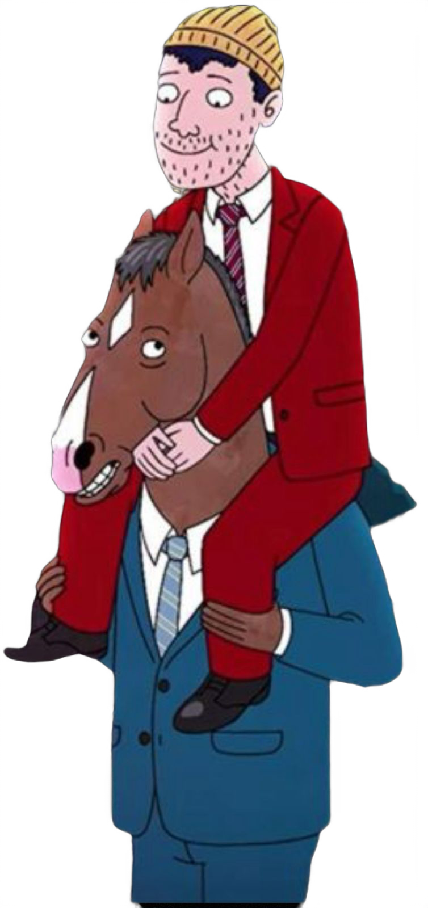
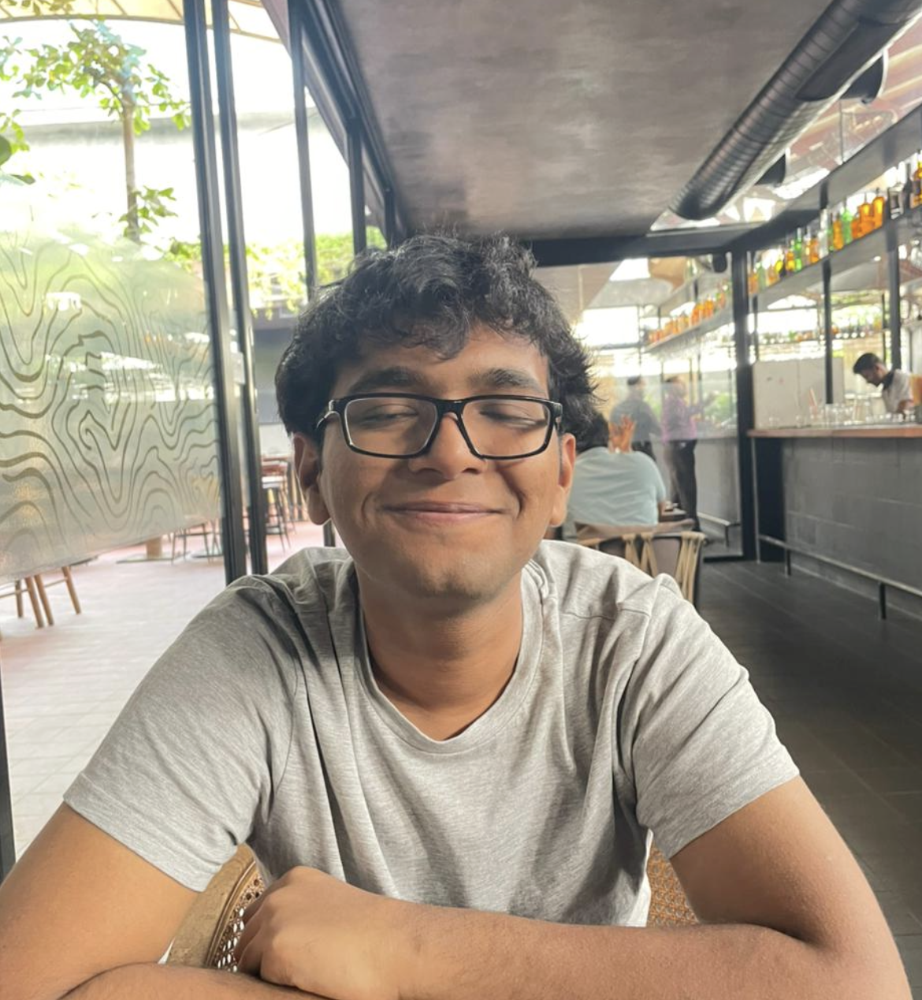

Nishit Singh (he / him / they / them)
.........................................................................................................
.........................................................................................................
.........................................................................................................
hey, i'm nishit. i study physics and engineering at the birla institute of technology and science (bits), pilani. currently, i'm interested in the unconventional ways physics interacts with ai, specifically world models, interpretability, and the likes.
i'm going to be pursuing my master's thesis with dr. kokil jaidka at nus, singapore. i've previously been associated with the csir national thin film laboratory (summer research intern), postman innovation labs and the kalipatnapu extended reality lab, and have had the privilege to be guided by dr. gaurav sharma in my exploits studying finite element methods. in what seems like another life, i worked with pieds, bits pilani as a student founder.
ive also found joy working with the film-making club (fmac) and the cinema and literature club (matrix) at bits.
i try to write about what i find interesting in life on my blog. in a discussion with a close friend, we came to the realization that archiving might be the cornerstone of human community. read here.


taken at [xyz] in [xyz]. some of the best [xyz] is sold here.
27/02/2004
new delhi, india
f20221317[at]pilani.bits-pilani.ac.in
research

Causal Evidence of Stack Representations in Modeling Counter Languages Using Transformers
ICLR 2026 (Accepted at the workshop for Logical Reasoning of LLMs)
openreview

RL-Synthesised Quantum Circuits: A Novel Lens for Phase Transitions in Many-Body Systems
Preprint, May 2026
readprojects


miscellaneous

A charcuterie board of comics/illustrations
Curated designs from my stint(s) as a graphic designer from 2022 to 2023
Gallery

blog

what im reading / watching / listening to
Last updated in March 2026